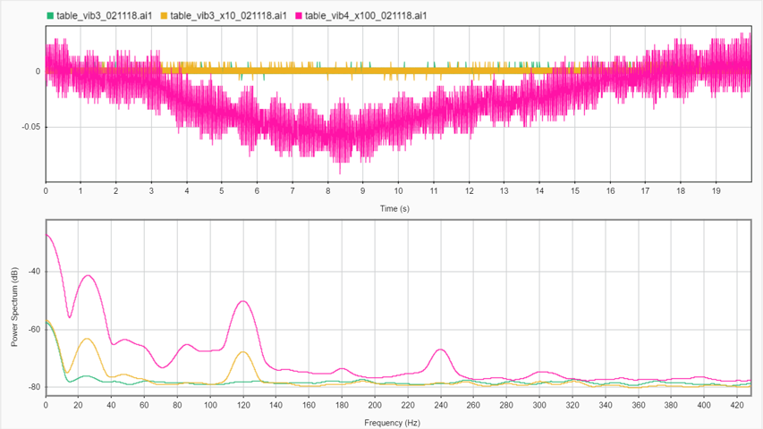
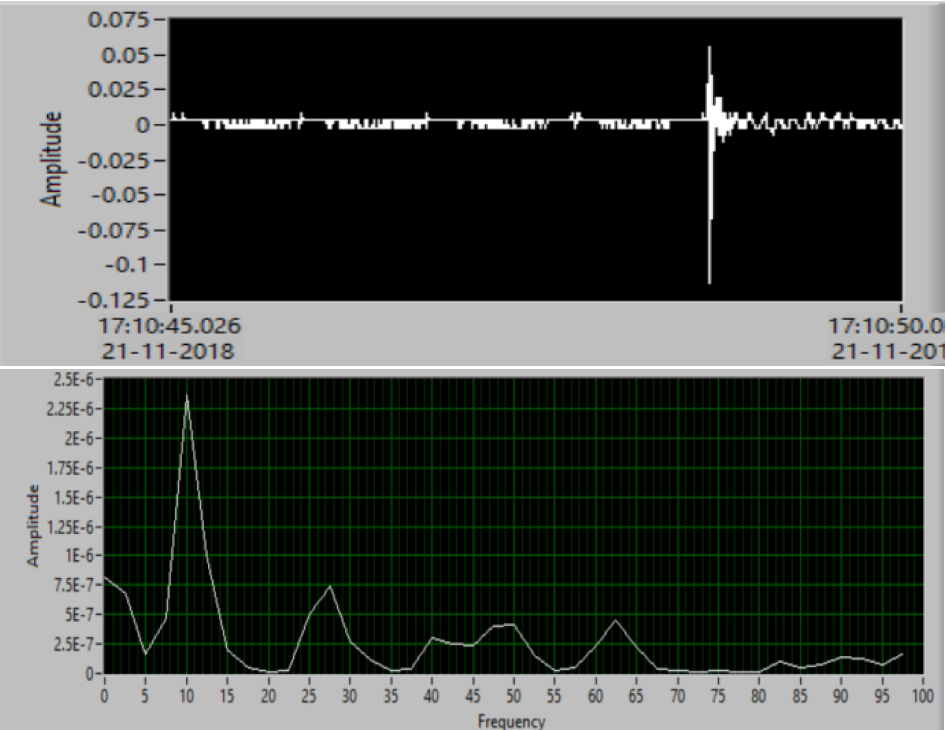

Overview:
Vibration analysis is the most prevalent method used for monitoring, detecting and analyzing the structure's condition
in real time or at specified time intervals, due to fast data collection and interpretation. Vibration analysis of
machinery is a key component in condition monitoring to understand change and to detect and define problems to give
you the time needed to correctly plan and execute repairs. Analyst must be able to evaluate the data and determine
what is causing the problem. Without these elements and implementing, and sustaining them correctly, we are wasting
valuable resources and profit dollars. Progressive wear of the rotating machine causes the nonlinear structure of the
received signal to intensify, and nonlinearity results in transfer of energy between harmonics of the signal's periodic
components. The objective of this study is to measure and analyze the system’s behavior which will lead to a more efficient
and predictive ways to control the quality of the product. This study presents a comparison better several results to
develop a deeper understanding of the dynamic response. The analysis utilizes vibration signature data as the main and
the only source of information from the machining process. The results demonstrate the effectiveness and robustness of
using the vibration signals in detecting the fault and reducing the noise.
My experience at Intelligent Sensing Lab as a Research Assistant was wonderful! I learned a proper way on how to perform research.
The motivation to conduct this reseach work was to help manufacturing industries to measure, detect and predict faults based on the
vibration analysis. For this study, a drill press and a Roll to Roll printing machine were considered.
Introduction:
All bodies possessing mass and elasticity are capable of vibration; which basically means everything you see and touch can
vibrate and are impacted from shock events. As the world around us gets increasingly more automated with more and more powerful
machinery, vibration and its destructive strength is on the forefront of any mechanical engineer’s mind during the design and
testing process. Improvements in sensor technology now permit the use of vibration analysis methodology with great ease. High
data acquisition systems can overcome the traditional limits, so highly accurate and localized analyses can be performed.
Understanding the basics and fundamentals of vibration analysis are very important in forming a solid background to analyze
problems on rotating machinery
Vibration is the art and science of measuring and understanding a structure’s response to a dynamic environment. It is an oscillating
motion about a point of equilibrium. Mechanical shock is a sudden change of acceleration that generally excites a structure’s resonance. A shock event is basically a type of vibration where the excitation is non-periodic; much of the test setup and analysis between shock testing is similar to vibration testing. Plus, the tendency for shock events to induce a vibratory response in the structure makes it worthwhile to discuss the shock and vibration testing together. Mechanical shocks and vibrations have become very pervasive in our ever day lives, so measuring and understanding their impact on your system is an important part of mechanical design. Vibration analysis is a very wide and complex domain which exploits several aspects of the testing and diagnosis disciplines, from condition monitoring to defect detection. Vibration analysis methodology could be subdivided into four principal domains:
•Time domain
•Frequency domain
•Joint domain (time/frequency domain)
•Modal analysis
Each domain provides specific information on the working conditions and features of the vibrating part. Typically, time-domain analysis is devoted to detecting the integral performance of the tested part: peak, average, root-mean-square, envelope values of vibration amplitude. These values are compared with threshold values in order to detect abnormal performance or latent defects. Frequency domain is able to provide more information as the measured signal is decomposed into a sequence of frequency components (spectrum) by a Fourier transform calculation (or fast Fourier transform—FFT). Local analysis of the different frequency components permits the association of a signature with the processed signal, such that the tested part can be identified precisely by its own signature (signature analysis). Due to the time-varying property of the signal, calculating many spectrums on the time observation window can be found to be useful. To do so, a joint time/frequency technique (Gabor−Wigner− Wavelet) can be used very efficiently. In a particular case of time/frequency analysis, the spectrums are related to the rotational speed of the tested devices (order analysis), such that the analysis of the single order which is represented by a frequency component varying with the speed is rendered possible. Modal analysis permits the study of the dynamic properties of structures under vibration excitation. This technique uses FFT in order to carry out a transfer function which shows one or more resonances, by means of which it is possible to estimate the characteristic mass, damping, stiffness, and other properties of the tested part. Using a laser interferometer, and suitable software tools, it is possible to apply noncontact vibration analysis for the test and measurement of MEMS (micro-electromechanical system) and MOEMS (micro-optical electromechanical system) dynamics and topography.
Switching between time and frequency is a common tool used for analysis. Because the frequency spectrum is derived from the data in the time domain, the relationship between time and frequency is very important. Units of acceleration, velocity, and displacement are typical. Switching units correctly, and keeping terms straight is a must.
This study will show a complete process from measuring the data using the data acquisition system to analyzing it using different software to find the anomalies. Two main machines have been focused on for the analysis. Several ways have been proposed to reduce the noise which could the affect the process of measuring vibrations. Different experiments were planned to gain a complete understanding of the machine.
Methodology:
This study is based on two different sections. The first section focuses on the measurement of the vibration signals using the DAQ system. And the second section concentrates on analyzing the signals.
Measurement: Data acquisition (DAQ) is the process of measuring an electrical or physical phenomenon such as voltage, current, temperature, pressure, or sound with a computer. A DAQ system consists of sensors, DAQ measurement hardware, and a computer with programmable software.
The measurement of a physical phenomenon, such as the temperature of a room, the intensity of a light source, or the force applied to an object, begins with a sensor. A sensor, also called a transducer, converts a physical phenomenon into a measurable electrical signal. Depending on the type of sensor, its electrical output can be a voltage, current, resistance, or another electrical attribute that varies over time. Some sensors may require additional components and circuitry to properly produce a signal that can accurately and safely be read by a DAQ device. Signals from sensors or the outside world can be noisy or too dangerous to measure directly. Signal conditioning circuitry manipulates a signal into a form that is suitable for input into an ADC. This circuitry can include amplification, attenuation, filtering, and isolation. Some DAQ devices include built-in signal conditioning designed for measuring specific types of sensors. A computer with programmable software controls the operation of the DAQ device and is used for processing, visualizing, and storing measurement data. Different types of computers are used in different types of applications. A desktop may be used in a lab for its processing power, a laptop may be used in the field for its portability, or an industrial computer may be used in a manufacturing plant for its ruggedness. [7]
Accelerometers are commonly used sensors for shock and vibration measurement. It can be mounted directly on the vibrating structure and proportionally converts mechanical energy to electrical when experiencing acceleration. Acceleration is generally represented with the gravitational constant ‘g’ which equals 9.81 m/s2. There are three main types of accelerometers: (1) Piezoelectric Accelerometer typically use lead Zirconate Titanate (PZT) sensing elements that product electric charge or output under acceleration. (2) Capacitive MEMS Accelerometer which senses a change in electrical capacitance, with respect to acceleration and
(3) Piezo-resistive Accelerometer which are strain gauge based so they require amplifiers and temperature compensation; but they have a very wide bandwidth and low noise characteristics. Piezoresistive accelerometers can be gas or fluid damped which protects the accelerometer and prevents it from reaching its internal resonant frequency. For this study, we best suitable accelerometer is the Piezoelectric Accelerometer from PCB. These accelerometers can be mounted directly to system and is the preferred choice for electrical engineers. Their low cost and small size has made them popular. Capacitive MEMS accelerometers have much poorer data quality, especially on the higher frequency and amplitude end which eliminate it from the list. To setup the accelerometer, Petro-wax was used which is one of the best method to mount.
The method of mounting the accelerometer to the vibrating structure and the coupling between the sensor and the measurement point is a critical factor in obtaining accurate results. Mounting types and methods influence the resonant frequency of the accelerometer. If/when the accelerometer’s mounting results in a reduction of its natural frequency the bandwidth (or useful frequency range) is reduced. Accelerometers, piezoelectric in particular, have a very high amplification factor at resonance too; so it’s important to avoid using a mounting method that shifts the resonance into the frequency range of your vibration environment. Based on the previous studies, stud mounting and the adhesive mounting are considered to be the best one.
Now that you have the sensor, something needs to capture and record the sensor’s output! Data acquisition systems do just as the name implies: collect/acquire data. The global leader in DAQ systems is National Instruments; but there are many other options out there too. National Instruments offers unparalleled customization options with both their modular hardware and their software program, LabVIEW. This could be the best for the online analysis. But we wish to perform the offline analysis, MATLAB’s Signal Processing toolbox could suffice the requirement.
Sampling rate, resolution and filter are the very important features which we need to consider while selecting the right type of DAQ system. It’s good practice to sample at a rate 10 times greater than the upper interested frequency range to accurately capture the vibration profile. But it all depends on what frequency range that your or customer is concerned about. When looking for a DAQ system they will typically have a resolution on the order of 16 or 24 bits. The lower quality shock and vibration data loggers however may only have a resolution of 12 bits or less which may not be adequate for our application. Filtering can be used to remove unwanted frequency content and should be an important part of your evaluation of different DAQ systems. High pass filters remove lower frequency vibration and is inherent to all piezoelectric accelerometers (resistor and capacitor in series) which gives these accelerometers the AC response. Low pass filters are more important however to prevent aliasing which can’t be filtered out in software.
Analysis: When analyzing vibration data in the time domain (amplitude plotted against time) we’re limited to a few parameters in quantifying the strength of a vibration profile: amplitude, peak-to-peak value, and RMS. Vibration is an oscillating motion about equilibrium so most vibration analysis looks to determine the rate of that oscillation, or the frequency which is proportional to the system’s stiffness. The number of times a complete motion cycle occurs during a period of one second is the vibration’s frequency and is measured in hertz (Hz). For simple sine waves the vibration frequency could be determined from looking at the waveform in the time domain; but as we add different frequency components and noise, we need to perform spectrum analysis to get a clearer picture of the vibration frequency.
Any waveform is actually just the sum of a series of simple sinusoids of different frequencies, amplitudes, and phases. A Fourier series is that summation of sine waves; and we use Fourier analysis or spectrum analysis to deconstruct a signal into its individual sine wave components. The result is acceleration/vibration
amplitude as a function of frequency, which lets us perform analysis in the frequency domain (or spectrum) to gain a deeper understanding of our vibration profile. Most vibration analysis will typically be done in the frequency domain.
Experimental Setup:
In this study, we have mainly considered two different manufacturing machines for the vibration measurement and analysis. These two machines have completely different mechanism which would give us a better idea of data acquisition performance.
For this study, we will be using a WEN 4208 8-inch 5-speed drill press shown in figure 1. It is a powerful, versatile and compact machine to drill through metal, plastic, wood, and more. It has a motor of 120V, 60 Hz, 2.3A, 1/3 HP. The five speed types will give us the flexibility to do our analysis on different speeds to study the effect on vibration, both in steady state and drilling state. Another machine used for performing the analysis was a Roll to Roll Machine (R2R). This machine is an advanced manufacturing machine which is used for flexible electronic printing. It consists of mainly two parts: Web Handling and Print Head. This machine is built from scratch in Intelligent Sensing Lab at UMass Amherst. With the help of control panel, we can change various parameters which can affect the overall process.
Once the machine is ready, we can proceed further to mount the sensor and measure the vibration data. We used a Platinum Stock Product ICP® accelerometer with a high sensitivity (100 mV/g), miniature (2 gm), ceramic shear sensing element accelerometer with a frequency range of 0.5 to 10000 Hz. It has a measurement range of ±50 g pk. This sensor is mounted on machine with the help of Petro-wax. This sensor is connected to a signal conditioner through a low-noise coaxial BNC cable. We used a PCB 482A16, 4 channel, line power, ICP® sensor signal conditioner. This unit provides constant current excitation to the built-in transducer amplifier and decouples the signal from the DC bias voltage. This device is connected to the DAQ device through cables.
A National Instrument USB 6000 Multifunction I/O data acquisition device was used. It offers analog I/O, digital I/O, and a 32-bit counter. The USB‑6000 provides basic functionality for applications such as simple data logging, portable measurements, and academic lab experiments. The device features a lightweight mechanical enclosure and is bus powered for easy portability. We can easily connect sensors and signals to the USB-6000 with screw-terminal connectivity. The included NI-DAQmx driver and configuration utility simplify configuration and measurements. [1]
This is a complete setup for the data acquisition system. Once the measurement system is ready, we have to connect it to the computer with programmable software which controls operation of the DAQ device and is used for processing, visualizing, and storing measurement data.[2] Any type of system would work as per the measurement setup. A laptop with Intel Core i7 - 8GB Memory was used. Based on different experiments, two software were used for this study, MATLAB with its Signal Processing toolbox and NI LabVIEW by developing a VI.
Results:
As we have two different machine setups for this study, we have divided this section in two parts. We will start with the drilling machine first. The later section will focus on the Roll to Roll analysis. All the vibration signals were studies in time domain as well as frequency domain.
Once the drilling machine setup is ready, we can start analyzing the vibration signals. As we have already seen in the previous section that the signal conditioner has 4 different channels, we will start with finalizing the channel first. This is done just to avoid any kind of noise due to the internal circuit. In the given figure, we can clearly see the channel 1(green) has some sort of noise which can affect the vibration measurement for the main study and could be misleading. Based on this, we selected channel 2 for all the analysis.
Another crucial step is to measure the vibration of the table on which the machine is mounted. For this study, the machine was kept on a simple work table without any clamps. This could be prone to number of vibrations like floor, building etc. Even walking or closing the door at the time of measurement could affect the reading. In the mentioned figure, third reading (pink) shows the result when the lab’s door was close by lab mate. To avoid this kind of noise, it is always better to mount the machine on optical table.

These are some basic steps which we need to consider for making our setup noise-free. The next step is to decide the best mounting position for the drill machine. This completely depends on the type of analysis you would like to perform. As the initial aim for this study was to detect and classify fault based on the vibration signals, the best position would be in proximity to the work piece. The below results show the data for idle condition at three different positions. Taking the vibration measurement in idle condition depicts the behavior of the machine’s dynamic state. In the time domain plot, maximum amplitude was attained when the accelerometer was mounted on base. As this drill machine was kept without any base clamping, it was able to produce the machine noise. This calls for another experiment which would require the clamping of the base. This is done in the later section.
Another interesting anomaly was observed by doing this experiment. For each trial taken at spindle head and top cover, we were getting the highest peak at 120Hz. This was unusual. After scrutinizing this plot, it was concluded that the effect was due to the magnetic forces. In the United States, the electric supply has a standard voltage of 120V and frequency of 60Hz. As the accelerometer was close to the induction motor, signals were getting affected by the line frequency due to magnetic forces. When we mounted the sensor on the spindle head and top cover, it was close to the induction motor of the machine and was getting influenced by its effect. But it was not observed when the sensor was mounted on base, which is far away from the effect of motor.
These experiments at idle states helps us to understand the behavior of the machine. It also aid in comparing the nature of the machine during the operation. One more step is required before proceeding toward the drill operation. We need to see the effect of drill machine at different speeds. As mentioned before, this machine has five speed options. Data was measure on all the speeds at idle state. It was obvious that we will get higher frequency at high speed as the machine will have more vibrations. It can be seen in the figure below. The encircled section shows the frequencies variation at higher rpm. We have successfully completed all the data measurement at steady/idle state. Now, we can proceed towards the penetration state. Again, five different trials were taken at 2100 rpm. The sample time for this study was 20 seconds and a feed of 4mm was fixed. The result of the experiment is attached below. It can be clearly seen that the plot shows different reading for each and every run. This was the major drawback of using a manual drill machine.
Every time when we manually feed the drill on the work piece while performing an experiment, due to the uncontrolled feed by hand, it makes variations. Hence, we would not be able to perform further analysis. For this we would need an automatic machine which would give a controlled feed. Although, we won’t be able to perform analysis for the fault classification and detection, we can detour to explore more. There are several other experiments which are worth performing. In one of the experiments, we observed that there were high amplitude vibrations which were captured by machine base. So we decided to clamp the base and perform the analysis. We have already seen the vibrations it makes; we decided to find the vibration range for the frequencies. The results were very impressive.
In the above figure, there are three different graphs which were taken using NI LabVIEW. Different setups were made to measure the range. The first two graphs were obtained by without clamping and with clamping respectively. For this, accelerometer was mounted on the base. Then, for the third graph, we mounted the sensor on vice jaw. This setup was planned in such a way that the sensor will not be able to capture the vibration directly from the base. In the first two graphs, it shows that highest peak were in the range of 240Hz to 260Hz which was not observed in the third graph.
One last thing which we can try is to dampen the vice handle. During the operation, the handle was vibrating a lot which was quite audible too. This is one of the types of the noises. To dampen the noise, we simply taped the handle. We have performed all the analysis on the drill machine. This is not limited to the above mentioned analysis. We can explore more analysis based on one’s interest. Now it is time to switch to another machine for our study. This is called Roll to Roll machine. The purpose of this analysis was different than the drill machine. As this machine is build from scratch in the lab, we needed to find the natural frequency of the overall machine. Another purpose of this study was to dampen the vibration which could affect the print quality.
To perform the analysis, different setups were explored. We mounted the accelerometer at three different places which are shown in the figure. To see the impact, the machine structure was hit at three different places with a rubber hammer. A VI was developed on NI LabVIEW to find the natural frequency. All the combination were tried to analyze. But the best result was found on when the accelerometer was mounted at the top left corner of the breadboard. The base of the sensor was parallel to the y axis or to the breadboard. The impact was given at the highest point of the machine so that measurement takes the effect of whole structure. The highest peak was obtained at 10Hz.

We avoided all the high frequencies as we approximated the range by observation. All the high frequencies were just considered as noise due to the impact. To cross check the natural frequency, we also plot the time vs amplitude graph in MATLAB. Based on the cycles per second, it was observed the same value i.e.; 10Hz.
The second experiment was to install vibration isolators at the base of the granite table. The assembly of these isolators are very simple. It just contains a circular thick rubber sheet with a through hole at the center. A long stud is passed in between to fix it with nuts on to the structure. By installing it at base, the upper structure transfers the vibration to the isolators which try to dampen the overall vibration of the machine. The time domain and frequency domain
graphs for the same are mentioned below. The first
graph shows effect of isolators with impact (purple,
orange) and without impact (green). Even after higher
hitting impact with isolators, we were able to dampen
the higher frequencies. The encircled part just shows that
the after the impact, the amplitude matches with that of
the amplitude when there was no impact. To get a better visualization, we plotted another graph
with magnified scale. In this time domain graph, we can
see that the signals without isolation (orange) takes time
to dampen and diminish. While the one with isolators
dampens and diminishes quickly.
The third experiment is worth performing. As we know
that the accelerometer is
uniaxial, what could be the
effect by changing the
orientation of the same? Do
test it, two different setups
were tried on the Roll to Roll
machine. The accelerometer
was mounted in both,
horizontal and vertical
direction. As the machine
vibrates more in the
longitudinal direction, the
sensor in vertical position
would capture more data,
irrespective of the hitting
amplitude. This is clearly visible in the below mentioned
graph. The yellow signal represents the vertical position
while the red on represents the horizontal position.
Almost equal amount of impact was giving during the testing. We saw that sensor at horizontal position was
not able capture the data.
Conclusion:
We have seen a broad range of vibration testing and
shock testing experiment in the previous section. We can
explore a wide variety of vibration test systems of
different sizes and broad test capabilities. Vibration
measurement and vibration analyses are important to
achieving a high product quality. These experiences can
help you choose the tests which will optimize your
product’s design and reliability. We also observed that
vibration equipment is highly adaptable and can be
customized to meet our special vibration test and
vibration analysis requirements.
We concluded that vibration plays a vital role in
studying machine’s behavior. We can test our system to
reduce the vibrations which could affect the quality of
the parts produced. Several experiments with different
combination of parameters give a clear insight about the
setup. In drill machine, different speed and drill bit size
could heavily affect the quality of the product.
Elimination of the noise becomes helpful to improve the
quality. In the Roll to Roll machine, proper dampening
of the parts and overall structure’s vibration could be
beneficial in high quality electronic printing.
Future Work:
We have seen a detailed analysis in the previous section
for various parameters, tests and experiments. But there
are more things which have been left for the future work
due to lack of time. All the below-mentioned things are
worth trying because it would help to develop more
robust model and to understand deeper underlying
mechanism for our analysis. This study is mostly based
on the available resources, leaving other works and
experiment outside the scope of this study. The
following ideas are:
- It could be interesting if we try using different accelerometer and DAQ device for both machines. Due to the low sensitivity and a uniaxial characteristic, it limits the dynamic behavior of the machines which affects the vibration signal measurement quality and analysis. A tri-axial, highly sensitive sensor would be worth exploring. For the DAQ, high sampling rate would be beneficial which would be able to measure more data.
- In the drill machine, we observed that the manual feed rate highly affected the vibration measured data. Due to this, the uneven removal of the chips from the drill flute marked some high frequency noises. To avoid this, we can perform the analysis on the automatic drill machine. This would also help us to maintain the consistency for each trial.
- Inducing different faulty drill bits and using different job material would definitely give us diverse vibration signals. We will have more data to compare and see the effects of different experimental setup.
- Once we have a diverse data set, we can try Artificial Intelligence algorithms and Machine Learning techniques to develop robust models to detect and classify the data. These models would help to predict the type of data on unseen dataset.
- For Roll to Roll machine, we studied the vibration isolators helped to dampen the vibration quickly and reduce the vibration intensity by small amount. It would be helpful if we try to install more isolators in the web handling section. The application of rubber sheet of Shore 20A/30A between the granite table and breadboard could help to reduce the vibrations further.